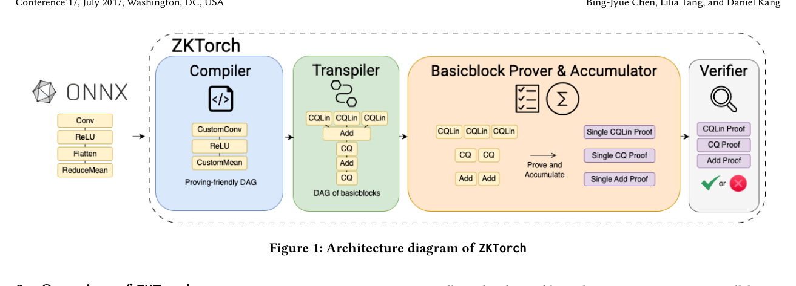
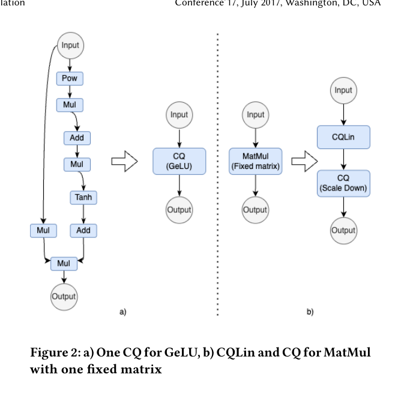

研究動機
問題背景
隨著 AI 模型被廣泛部署於各種商業服務，用戶面臨一個核心問題：如何驗證模型推論的正確性，同時保護模型權重的商業機密？
- GPT-4 訓練成本超過 1 億美元
- 企業不願公開模型權重
- 用戶無法驗證輸出是否來自宣稱的模型
核心矛盾
透明稽核需求：確認模型按宣稱方式運作
商業機密保護：模型權重是核心資產
ZKTorch 的核心價值
使用零知識證明（ZK-SNARK）實現：
- 可驗證性：證明輸出確實由正確推論產生
- 隱私性：不洩露模型權重
既有方法的困境
通用電路編譯
把模型變成低階算術電路（如 halo2/Plonk）
- 優點 通用性強
- 缺點 極慢，大模型需要數百小時
特化協定設計
針對特定模型架構設計專用協定
- 優點 效能較好
- 缺點 不通用，CNN 不支援 LLM
ZKTorch 的核心想法
把 ML 推論拆成一組可組合的密碼學積木（Basic Blocks），
每個積木用專門協定證明，再用平行累積技術把證明組合起來
技術背景
ZK-SNARK 在 ZKML 中的應用
目標關係 R：(公開輸入 π, 私密見證 w) ∈ R
- w（見證）：模型權重與中間激活值
- π（公開輸入）：輸入/輸出承諾
Prover 證明「輸出確實由模型正確計算」，但不洩露 w 的內容。
三大核心性質
誠實 prover 一定能產生有效證明
作弊者無法偽造證明
Verifier 學不到 w 的資訊
KZG 多項式承諾
ZKTorch 使用 KZG（Kate-Zaverucha-Goldberg） 承諾方案：
- 用 pairing（雙線性配對）驗證開啟
- 需要 SRS（Structured Reference String）
- 支援批次開啟（batch opening）
為什麼選 KZG？
ML 會大量用到「同一層很多元素做同樣規則的檢查」，batch opening 能顯著節省成本。
Accumulation / Folding 的挑戰
原本的瓶頸
把模型拆成基本積木後，會產生大量小 proof。如果每個都保留，proof size 會爆；驗證也會爆。
Mira 提供了 pairing-based 的 folding，但原版是序列化：N 個 proof 需要 O(N) 逐個 fold，成為主要瓶頸。
系統架構

五階段處理流程
模型交換格式
ZK-friendly 圖改寫
Layer → 積木 DAG
每積木產生 proof
平行折疊成最終 proof
架構說明
| 階段 | 功能 | 關鍵技術 |
|---|---|---|
| ONNX 輸入 | 接收標準模型格式 | 支援 61 種 ONNX layer |
| Compiler | 圖層級優化 | 7 條 rewrite 規則（Table 2） |
| Transpiler | Layer 轉換為積木序列 | Fixed-point 量化 |
| Prover | 產生每個積木的 proof | 13 種可累積積木 |
| Accumulator | 平行折疊 proofs | 樹狀 reduction |
三大核心貢獻
- 擴充基本積木：支援 61 種常見 ML layer（CNN/RNN/Transformer 都涵蓋）
- 平行累積：把 Mira 累積推廣到可平行化，最多達 6× 證明加速
- 編譯器優化：最多 4.8× 證明時間下降、2398× 證明大小下降
基本積木（Basic Blocks）
ZKTorch 把 ML 運算抽象為一組密碼學友善且可覆蓋常見運算的最小積木集合：
積木分類
可累積
可累積
可累積
三個最關鍵的積木
CQLin（固定矩陣線性運算）
適用於 Conv、固定權重的 MatMul
- 矩陣在 compile-time 已知
- 可預處理 → 證明時間對輸入近線性
- 可累積
MatMul（一般矩陣乘）
適用於 LLM/RNN 的動態矩陣乘法
- 依 Aurora 技術做多項式化檢查
- 支援 runtime 動態矩陣
- 可累積
CQ / CQ2（查表與集合包含）
用於非線性函數（ReLU/GeLU/Softmax 近似）與 scaling/範圍檢查
- CQ 的關鍵優勢：proving time 對 table size 不敏感（cached quotient）
- CQ2：支援雙欄查表，非線性 + rescaling 可合併成一次操作
積木的可累積性（Table 1）
| 積木類別 | 積木名稱 | 可累積 |
|---|---|---|
| 算術 | Add, Sub, Mul, MulConst | ✓ |
| 查表 | CQ, CQ2 | ✓ |
| 矩陣 | CQLin, MatMul | ✓ |
| 形狀 | Concat, Permute | ✓ |
| 布林 | BooleanCheck, Ordered | ✗ |
| 特殊 | MaxProof, CopyConstraint | ✗ |
為什麼可累積性很重要？
可累積 = 可以把大量重複結構折成常數大小證明。ML 有大量重複結構，這對效能至關重要。
平行累積（Parallel Accumulation）
ZKTorch 最核心的密碼學創新
把原本序列化的 Mira folding 變成可平行化的樹狀累積
原本的問題
Mira 的累積介面是「一個 accumulator + 一個 proof」：
必須有一個「目前累積到哪裡」的狀態，下一個 proof 才能 fold 進來。
結果：N 個 proof 需要 O(N) 次序列操作，成為瓶頸。
ZKTorch 的解法
關鍵洞察
把 proof 視為 accumulator 的特例（μ=1, e=0），於是：
任意兩個 accumulator 都能互相 fold！
樹狀累積流程
一堆 proof 兩兩 fold 成一堆 acc，再兩兩 fold... 最後高度是 log N，而每一層可以平行跑。
平行化的效果
序列累積
深度：O(N)
無法平行化
樹狀累積
深度：O(log N)
每一層可以完全平行
累積器的結構
Accumulator Instance 包含：
- 公開部分：π、承諾（commitments）、隨機挑戰、slack (μ)、誤差承諾 (E)
- 私密部分：對應 witness 承諾、誤差 witness (e)
累積的核心：隨機線性組合（RLC）
E'' = E' + Σ γjEj + γdE
安全性保證
如果其中任一個 instance 是假的，想要在不知道隨機挑戰 γ 之前就造出能同時滿足新 instance 的 error，會非常困難，於是保住 soundness。
編譯器優化
編譯器的目標
目標不是「推論更快」，而是「證明更便宜」
把 ZK 成本當作 compiler cost model 的目標函數
兩種優化層級
Layer 內優化
同功能換一種更便宜的證明方式
範例：Softmax 的數值穩定技巧 — 先減 max
Layer 間優化
把圖 rewrite 成更少昂貴積木
目標：避免 CopyConstraint，多用可累積積木

7 條 Rewrite 規則（Table 2）
| 規則名稱 | 說明 |
|---|---|
| ReshapeTrans | 合併 reshape 與 transpose 操作 |
| GeLU | 用查表版 GeLU 替代算術層拼接 |
| MultiHeadMatMul | 優化多頭注意力的矩陣乘法 |
| RoPE | 優化旋轉位置編碼 |
| CustomCNN | 把 Conv 變成 CQLin 為主的組合 |
| MultiHeadConv | 優化多頭卷積 |
| ConcatConv | 合併 concat 與 conv 操作 |
CustomConv 的威力
為什麼能大幅節省證明成本？
- 一般 Conv 需要大量 shape 操作來展開 im2col → 逼迫使用昂貴的 CopyConstraint
- ZKTorch 改變資料 layout，讓 Conv 主要變成「很多次固定矩陣乘」(CQLin)
- 利用 KZG 的同態性，許多加法可以直接在承諾上做組合，幾乎不用額外 proof
- 最後用累積把大量重複 CQLin/CQ/add 折成常數級證明
Transpiler：ONNX Layer → Basic Blocks
共通 ZKML 模式
- 浮點 → 有限域：用 fixed-point + quantization（10/12 bits）
- 乘法後要 rescaling：scale factor correction
- Layout 選擇：依承諾維度選擇，有些 shape 操作可以「免費」
- 固定矩陣優先用 CQLin：比一般 MatMul 更省
實驗結果
實驗設定
- 曲線/域：BN254（254-bit prime field）
- 量化：多數 10 bits，GPT-j 用 12 bits
- 硬體：Intel Xeon Platinum 8358 2.6GHz，64 threads，4TB RAM
- 模型：MLPerf Edge v4.1 全套 + LLaMA-2-7B
端到端效能（Table 4）
| 模型 | Proving Time | Verify Time | Proof Size |
|---|---|---|---|
| RNNT | 19.39s | 1.06s | 59.46 KB |
| BERT | 880.42s (~15min) | 26.67s | 4.88 MB |
| GPT-j | 1,397.52s (~23min) | 62.64s | 6.54 MB |
| LLaMA-2-7B | 2,645.50s (~44min) | 100.14s | 22.85 MB |
| ResNet-50 | 6,270.50s (~1.7hr) | 62.81s | 85.41 KB |
| SDXL | 68,950s (~19hr) | 1,003.3s | 145.84 MB |
| 3D-UNet | 568,543s (~158hr) | 14,406s | 1.4 MB |
關鍵成就
ZKTorch 是第一個能在同一框架內支援
從 RNNT 這種小模型到 LLaMA-2-7B 這種大模型的 ZKML 系統
量化後準確率（Table 5）
| 模型 | 參考準確率 | ZKTorch 準確率 |
|---|---|---|
| BERT (F1) | 90.874% | 90.104% |
| ResNet-50 | 76.456% | 76.038% |
| RNNT (WER) | 7.45% | 7.49% |
| RetinaNet (mAP) | 0.3757 | 0.3753 |
結論：量化與 scaling 的選擇讓精度幾乎維持基準，代表編譯與查表策略在數值層面是站得住腳的。
平行累積的效果（Table 7）
| 模型 | 序列累積 | 平行累積 | 加速 |
|---|---|---|---|
| GPT-j (Prover) | 8,662.96s | 1,397.52s | 6.2× |
| ResNet-50 (Verifier) | 1,013.22s | 62.81s | >16× |
| LLaMA-2 (Prover) | 5,976.34s | 2,645.50s | 2.3× |
| RNNT (Prover) | 35.62s | 19.39s | 1.8× |
編譯器優化的效果（Table 8）
| 模型 | 無優化 Prover | 優化後 Prover | 無優化 Proof | 優化後 Proof |
|---|---|---|---|---|
| BERT | 52,976.51s | 880.42s | 154.87 MB | 4.88 MB |
| ResNet-50 | — | — | 200.01 MB | 85.41 KB |
| GPT-j | 5,181.47s | 1,397.52s | 115.39 MB | 6.54 MB |
(200MB → 85KB)
關鍵發現
Proof size 的爆炸與壓縮其實是編譯器決定的。不 rewrite 圖、直接照原生 ONNX pattern 去證明，會大量落入昂貴的 shape/copy constraint。
結論與展望
ZKTorch 解決了什麼問題？
- 解決「通用 vs 特化」兩難：抽象成 basic blocks，介於兩者之間
- 讓 proof size 不隨模型深度爆炸：大量重複結構可折成常數
- 把 folding 從序列瓶頸變成可平行 reduce
限制與挑戰
Trusted Setup
KZG 需要 SRS（可信設定），依賴 powers-of-tau
證明時間仍大
3D-UNet、SDXL 等模型需要數小時到數天
部署情境
Proof size MB 級可能不適合鏈上，更適合鏈下驗證或審計
可擴充性
新 layer 或新算子需要新增 transpiler 規則與對應積木組合
五個關鍵 Takeaways
- Basic Blocks 是對的抽象層級：夠通用、又能針對每種運算選最合適的證明方式
- 平行累積是突破序列瓶頸的關鍵：把 proof 視為 accumulator 特例讓 folding 可平行化
- 編譯器是第一公民：ZK 成本是 cost model 的目標函數
- 覆蓋 MLPerf Edge v4.1：第一個能支援全套標準模型的 ZKML 系統
- 仍在「接近能用」的路上：離「所有大模型都即時」還有距離
核心貢獻總結
ZKTorch 用「積木化」把 ML 推論轉成可證明的 DAG，
用「可平行的累積」把大量小證明壓縮成單一 succinct proof，
用 compiler 把整張圖改寫成更省證明的形式。
它把 ZKML 從「能證明」推進到「更接近能用」。